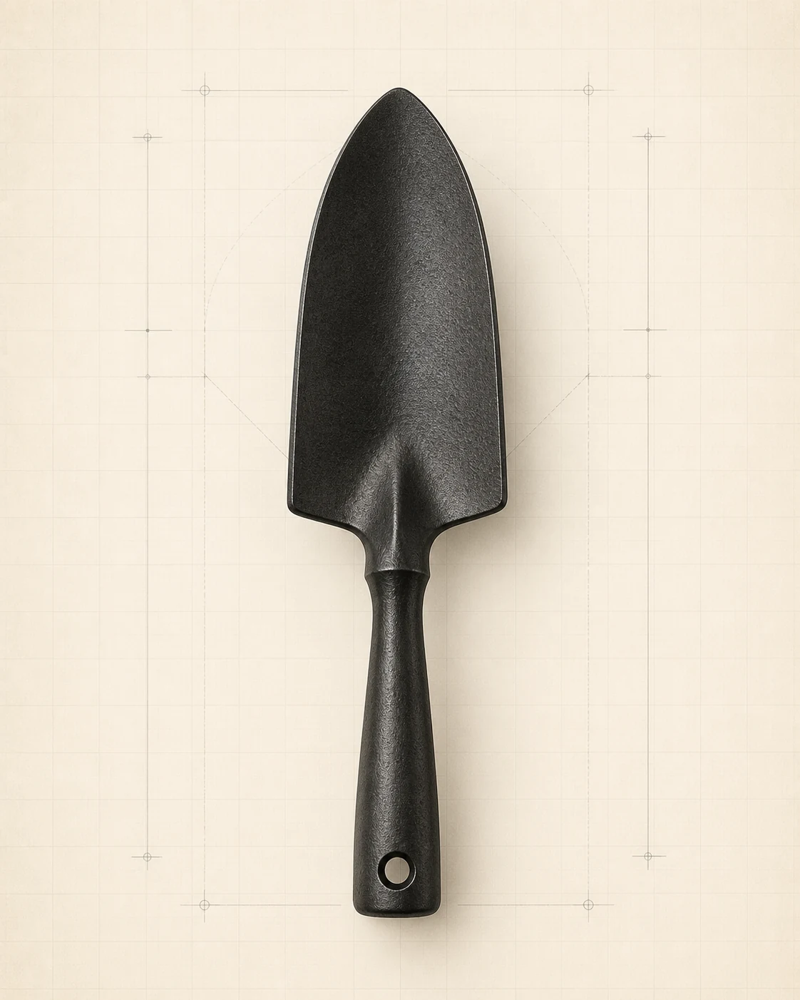

Confidential OEM manufacturing · Since 1974
Your brand.Built to withstand change.
For 52 years, Birdland has manufactured behind customer brands—never competed against them. Manufacturing discipline stays at the core while supply intelligence helps prepare for material, freight, origin and policy change.
Market
change
change
Birdland
response
response
Your
programme
programme

OEM confidence
→
Confidential by design.
Built for long-term partnership.
Production intelligence
→
Asia supply evidence.
Clear buyer implications.
Material &
process knowledge
→
process knowledge
Deep manufacturing expertise.
Better control questions.
Birdland buyer system
Public intelligence. Private commercial work.
Use the public desks to understand production context and prepare questions. Quotations, drawings, specifications and programme details stay in established private email—not in a public website account.